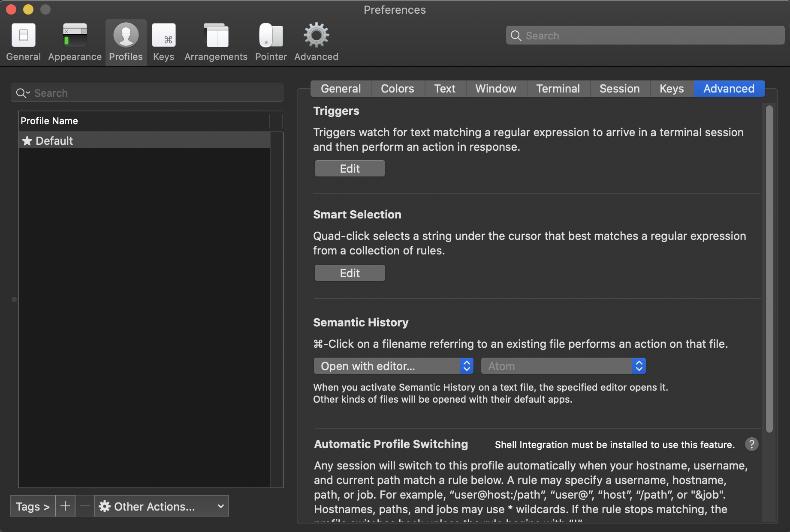
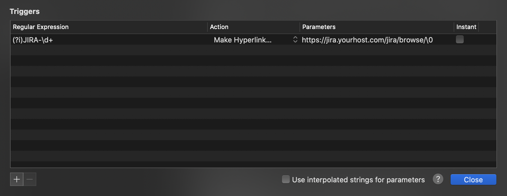

Using iTerm triggers
iTerm triggers can be used for converting text in your terminal to URLs and make them clickable. This is useful for creating JIRA issue links whenever there is a JIRA-1234 like pattern.
Steps:
Go to
iTerm -> Preferences -> Profiles -> Advanced -> Triggers Edit

Add an entry in the table
Regular Expression: (?i)JIRA-\d+
Action: Make Hyperlink
Parameters: https://jira.yourhost.com/jira/browse/\0

Now whenever there is a pattern with JIRA-1234, it will become a clickable hyperlink.